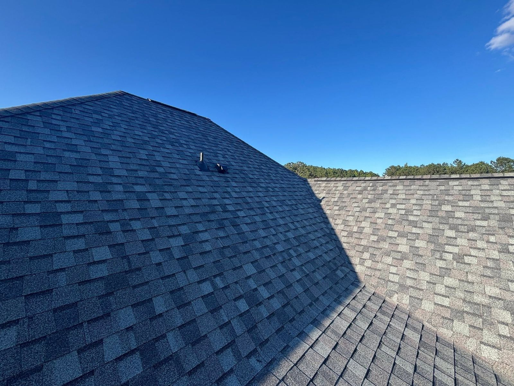

Storm & Hail Damage Roof Repair in Alabama
Storm just rolled through? Get a free, honest damage inspection from local pros. And if you have a claim, we'll handle the insurance process for you, start to finish.
After the Storm,
Before the Leak
Alabama takes a beating: spring hail, summer thunderstorms, tropical remnants off the Gulf. Most storm damage can't be seen from the ground. Hail bruises shingles without tearing them, and wind lifts edges that let water creep in slowly for months.
Our crews inspect the whole roof system, from shingles and flashing to vents and gutters, and photograph everything. If the damage is minor, we repair it and you're done. If it's widespread, you likely have an insurance claim, and we handle that process for you.
Proudly serving Montgomery, Birmingham, Huntsville, Auburn-Opelika, and Baldwin County. Licensed, insured, CertainTeed-certified, and 5.0-star rated by your neighbors.

How to Tell Your Roof Took Damage
From the ground, look for: shingles in the yard or gutters, granules piling up at downspout exits, dented gutters or window screens, and dinged siding or AC fins. If hail hit those, it hit your roof too.
Up top (leave this to us): hail bruising (soft, dark spots where the granules got knocked away), creased or lifted shingles from wind, cracked pipe boots, and bent flashing. None of these leak on day one, but every one of them leaks eventually.
Inside the house: new ceiling stains, damp attic insulation, or daylight through the roof decking mean water is already getting in. Give us a call the same day at (334) 318-7255.
Neighbors getting roofs replaced after a storm is itself a sign: hail doesn't skip houses. If out-of-town storm chasers are knocking on your door, get a second opinion from a local, licensed Alabama company that will still be here in five years.
From Storm to Restored, Step by Step
Free Inspection
We inspect and photograph the entire roof system, documenting every mark the storm left.
Honest Verdict
Minor damage? We quote a repair. Widespread damage? We walk you through the claim option.
Claim Handled
We file the documentation and meet your adjuster on the roof so nothing gets missed. How claim help works.
Roof Restored
Repair or full replacement to manufacturer spec. CertainTeed materials, our own crews, spotless cleanup.
Storm Damage Questions, Answered
Does homeowners insurance cover hail damage in Alabama?
In most cases, yes. Standard policies cover sudden storm damage, including hail and wind. What matters is documenting the damage properly and filing within your policy's time limits. We photograph everything, meet your adjuster on the roof, and make sure nothing gets missed.
How soon after a storm should I get an inspection?
As soon as possible. Damage isn't always visible from the ground, and small breaches let water in slowly. By the time a ceiling stain appears, there may be months of hidden damage. Most policies also have filing deadlines. The inspection is free, so there's no reason to wait.
What does a storm damage inspection cost?
Nothing. Our storm inspections are free, with no obligation. You get an honest assessment either way. If your roof is fine, we'll be glad to tell you so.
Will my insurance rates go up if I file a roof claim?
Storm damage is an "act of God" claim, which insurers treat differently than at-fault claims. Regional rates often adjust after major storms whether or not you file. We can't promise what your insurer will do, but we can make sure your claim is documented properly so you get what your policy owes you.
Think the Storm Got Your Roof?
Don't wait for the ceiling stain. Get a free storm damage inspection and an honest answer. If you have a claim, we'll handle it from start to finish.
Get My Free Storm Inspection